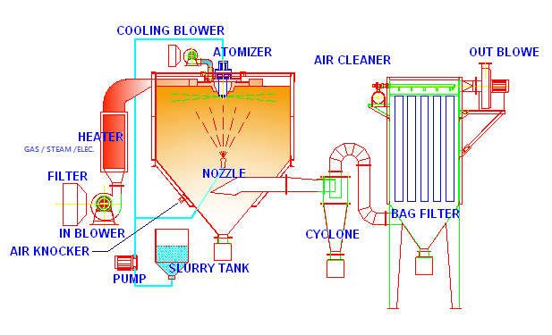

噴霧乾燥機是一種利用熱風的連續乾燥裝置，將漿料瞬間乾燥成粉末的機器，並且經由氣流的運送，利用適當的收集方法，收集乾燥後的原料。
利用特殊的噴嘴(壓力式或二流體式)、或者是高速旋轉圓盤(離心式)把漿料球粒化，使其表面積增大，並同時施以連續的熱風，以達到瞬間乾燥的目的。因此噴霧造粒技術應用於對熱敏感的材料也鮮少有變質的情形，而且可以省略濃縮、過濾、粉碎、分級、乾燥等繁瑣的工程。
此外，粉體乾燥成品成球形，所以流動性佳，對於食品業來說，其優點為易溶於水；對於電子材料、粉末冶金、精密陶瓷來說，可以製造出高密度且一致性的產品。 |
 |
| |
|
|